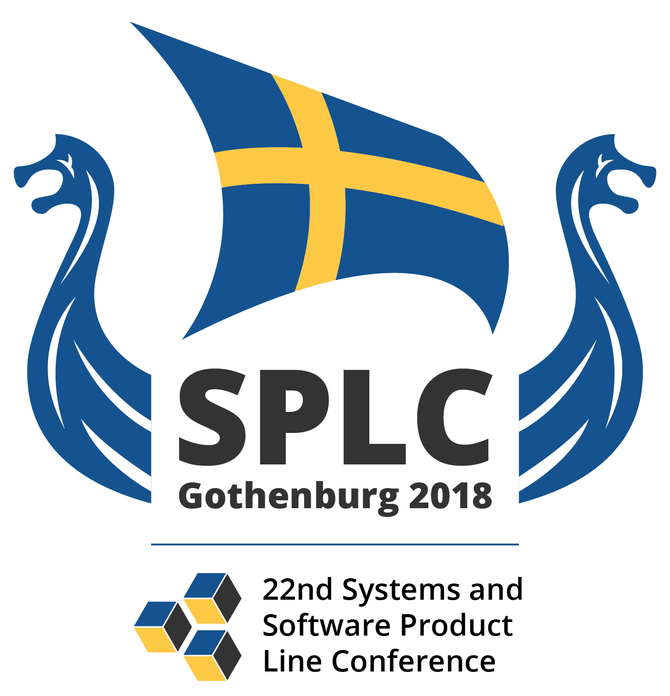

Challenge track co-chairs
Sarah Nadi, University of Alberta, Canada
Timo Kehrer, Humboldt-Universität zu Berlin, Germany
Apo-Games – A Case Study for Reverse Engineering Variability from Cloned Java Variants
Jacob Krüger, Wolfram Fenske, Thomas Thüm, Dirk Aporius, Gunter Saake, and Thomas Leich
Challenge and Solutions site
Software-product-line engineering is an approach to systematically manage reusable software features and has been widely adopted in practice. Still, in most cases, organizations start with a single product that they clone and modify when new customer requirements arise (a.k.a. clone-and-own). With an increasing number of variants, maintenance can become challenging and organizations may consider migrating towards a software product line, which is referred to as extractive approach. While this is the most common approach in practice, techniques to extract variability from cloned variants still fall short in several regards. In particular, this accounts for the low accuracy of automated analyses and refactoring, our limited understanding of the costs involved, and the high manual effort. A main reason for these limitations is the lack of realistic case studies. To tackle this problem, we provide a set of cloned variants. In this paper, we characterize these variants and challenge the research community to apply techniques for reverse engineering feature models, feature location, code smell analysis, architecture recovery, and the migration towards a software product line. By evaluating solutions with the developer of these variants, we aim to contribute to a larger body of knowledge on this real-world case study.
Feature Location Benchmark with ArgoUML SPL
Jabier Martinez, Nicolas Ordoñez, Xhevahire Tërnava, Tewfik Ziadi, Jairo Aponte, Eduardo Figueiredo, and Marco Tulio Valente
Challenge and Solutions site
Feature location is a traceability recovery activity to identify the implementation elements associated to a characteristic of a system. Besides its relevance for software maintenance of a single system, feature location in a collection of systems received a lot of attention as a first step to re-engineer system variants (created through clone-and-own) into a Software Product Line (SPL). In this context, the objective is to unambiguously identify the boundaries of a feature inside a family of systems to later create reusable assets from these implementation elements. Among all the case studies in the SPL literature, variants derived from ArgoUML SPL stands out as the most used one. However, the use of different settings, or the omission of relevant information (e.g., the exact configurations of the variants or the way the metrics are calculated), makes it difficult to reproduce or benchmark the different feature location techniques even if the same ArgoUML SPL is used. With the objective to foster the research area on feature location, we provide a set of common scenarios using ArgoUML SPL and a set of utils to obtain metrics based on the results of existing and novel feature location techniques.
Interoperability of Software Product Line Variants
Ferruccio Damiani, Reiner Hähnle, Eduard Kamburjan, and Michael Lienhardt
Challenge and Solutions site
Software Product Lines are an established mechanism to describe multiple variants of one software product. Current approaches however, do not offer a mechanism to support the use of multiple variants from one product line in the same application. We experienced the need for such a mechanism in an industry project with German Railways where we do not merely model a highly variable system, but a system with highly variable subsystems. We present the design challenges that arise when software product lines have to support the use of multiple variants in the same application, in particular: How to reference multiple variants, how to manage multiple variants to avoid name clashes, and how to keep multiple variants interoperable.
Localizing Configurations in Highly-Configurable Systems
Paul Gazzillo, Ugur Koc, Thanhvu Nguyen, and Shiyi Wei
Challenge and Solutions site
The complexity of configurable systems has grown immensely, and it is only getting more complex. Such systems are a challenge for software testing and maintenance, because bugs and other defects can and do appear in any configuration. One common requirement for many development tasks is to identify the configurations that lead to a given defect or some other program behavior. We distill this requirement down to a challenge question: given a program location in a source file, what are valid configurations that include the location? The key obstacle is scalability. When there are thousands of configuration options, enumerating all combinations is exponential and infeasible. We provide a set of target programs of increasing difficulty and variations on the challenge question so that submitters of all experience levels can try out solutions. Our hope is to engage the community and stimulate new and interesting approaches to the problem of analyzing configurations.